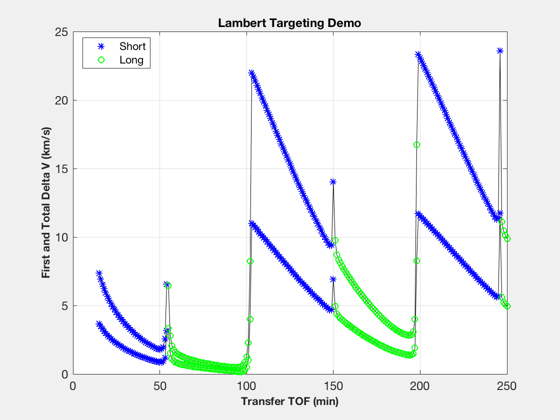
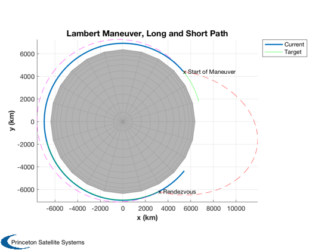

Demonstrates the Lambert targeting function DVTarget.
The selected time of flight drastically affects the resulting delta-V, from 181 m/s to 23 km/sec. ------------------------------------------------------------------------- Reference: Vallado 2nd edition, p.476 and Fig. 7-20 ------------------------------------------------------------------------- See also Plot3D, TitleS, XLabelS, YLabelS, Mag, DVTarget, LambertTOF, RV2El, RVFromKepler -------------------------------------------------------------------------
Contents
%-------------------------------------------------------------------------- % Copyright 2003 Princeton Satellite Systems, Inc. All rights reserved. %-------------------------------------------------------------------------- % Initial spacecraft states at epoch r1 = [5328.7862; 4436.1273; 101.4720]; v1 = [-4.864779; 5.816486; .240163]; r2 = [6697.4756; 1794.5831; 0]; v2 = [-1.962372; 7.323674; 0]; disp('Current Elements [a i W w e M] :') disp(RV2El(r1,v1)) disp('Target Elements:') disp(RV2El(r2,v2)) % Transfer times and plotting parameters tTrans = [15:1:250]*60; aPlot = zeros(size(tTrans)); bPlot = zeros(size(tTrans)); tMPlot = bPlot; % Perform targeting for k = 1:length(tTrans) [dV,tM,ok] = DVTarget(r1,v1,r2,v2,tTrans(k)); aPlot(k) = Mag( dV.a ); bPlot(k) = aPlot(k) + Mag( dV.b ); tMPlot(k) = tM; if ~ok tMPlot(k) = 0; end end % Generate plot kShort = find(tMPlot>0); kLong = find(tMPlot<0); kEarth = find(tMPlot==0); NewFig('TargetDemo'); plot(tTrans/60,[aPlot;bPlot],'k'); hold on hS = plot(tTrans(kShort)/60,[aPlot(kShort);bPlot(kShort)],'b*'); hL = plot(tTrans(kLong)/60,[aPlot(kLong);bPlot(kLong)],'go'); hE = plot(tTrans(kEarth)/60,[aPlot(kEarth);bPlot(kEarth)],'rs'); legend([hS(1) hL(1)],'Short','Long','location','best'); XLabelS('Transfer TOF (min)'); YLabelS('First and Total Delta V (km/s)'); TitleS('Lambert Targeting Demo'); grid on;
Current Elements [a i W w e M] :
6943.2 0.034906 0.2618 1.3963 0.0022324 -0.95994
Target Elements:
6933.7 0 0 5.8152 8.5654e-08 0.72978
 Also plot a sample trajectory pair
%----------------------------------- tTrans = 75*60; % initial orbits [r1p,v1p] = RVFromKepler(RV2El(r1,v1),linspace(0,tTrans)); [r2p,v2p] = RVFromKepler(RV2El(r2,v2),linspace(0,tTrans)); % first transfer vTrans = LambertTOF( r1, r2p(:,end), tTrans, 1 ); rT1 = RVFromKepler(RV2El(r1,vTrans(:,1)),linspace(0,tTrans)); % second transfer [vTrans,a,p] = LambertTOF( r1, r2p(:,end), tTrans, -1 ); [rT2,v] = RVFromKepler(RV2El(r1,vTrans(:,1)),linspace(0,tTrans)); [h,h1] = Plot3D( r1p, 'x (km)','y (km)','z (km)', 'Lambert Maneuver, Long and Short Path', 6378 ); hold on; h2 = plot3( r2p(1,:), r2p(2,:), r2p(3,:), 'g'); plot3( rT1(1,:), rT1(2,:), rT1(3,:), 'r--'); plot3( rT2(1,:), rT2(2,:), rT2(3,:), 'm--'); text( r1(1,1), r1(2,1), r1(3,1), 'x Start of Maneuver') text( rT2(1,end), rT2(2,end), rT2(3,end), 'x Rendezvous') axis square; axis equal; view(0,90); legend( [h1 h2], 'Current', 'Target' ) %-------------------------------------- % PSS internal file version information %--------------------------------------